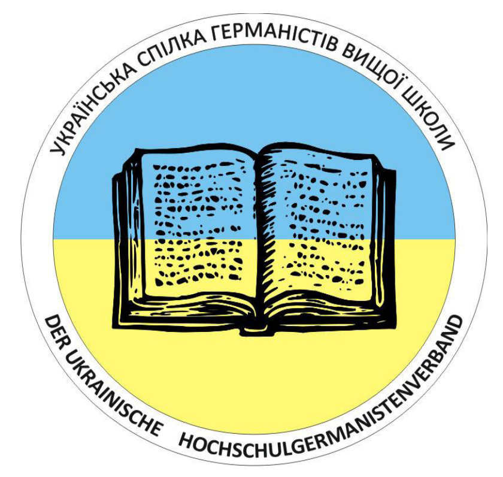

Офіційний сайт
Liebe Kolleg:innen,
wir möchten Sie sehr herzlich dazu einladen, einen Beitrag für die internationale mehrsprachige Konferenz LiP2027 – Language is Plural: Celebrating Multilingualism in Language Education einzureichen, die von 26. bis 29. Juli 2027strong> an der Universität Wien stattfindet.
Die LiP2027 wird in Kooperation mit dem Internationalen Deutschlehrerinnen- und Deutschlehrerverband (IDV), der Fédération Internationale des Professeurs de Langues Vivantes (FIPLV) und der Universität Wien vom Österreichischen Verband für Deutsch als Fremd- und Zweitsprache (ÖDaF) veranstaltet. Die Tagung verbindet den FIPLV World Congress und die Internationale Delegiertenkonferenz des IDV von 26. bis 28. Juli 2027. Am 29. Juli findet die Vertreter*innenversammlung des IDV statt. Es werden rund 500 Forschende und Lehrende aus der ganzen Welt erwartet.
Alle Informationen sowie den Call for Papers auf Deutsch und Englisch finden Sie auf Website.
Beiträge können bis zum 31. Dezember 2026strong> eingereicht werden.
Bei Fragen wenden Sie sich an office@lip2027.com.